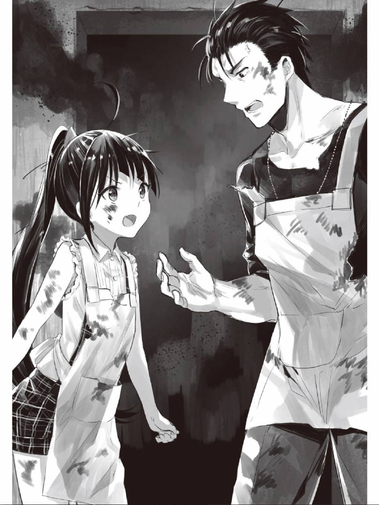
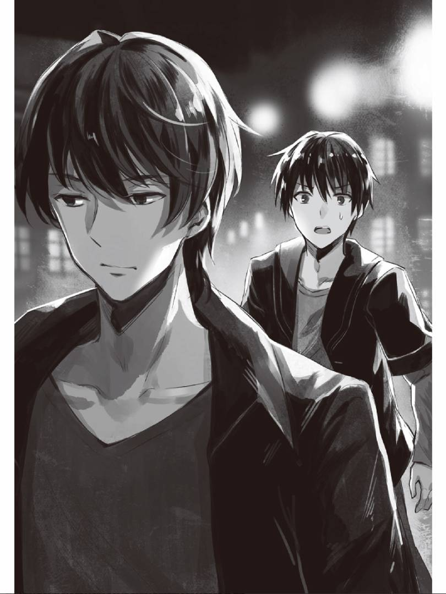

#22 希腊国的标语
（奇怪，回想不起来。）
清晨醒来后翠状态非常不错。因为夏莉雅还在睡着，他便躺在床上回想起了来到这个世界之前的事。
身为典型异世界转生作品主角的八崎翠，迄今为止仅仅走过了一段普通至极的人生。只不过认识一位从美国回来的超级巨星……开个玩笑，一位从印度而来的语言爱好者————印度的前辈而已。而问题就是，这一段普通至极的日常现在却一点儿也想不起来。能记得的仅仅是普通这一点。
遗忘，是人类拥有的强大力量。尽管记忆力达到顶峰会让人感到能在学业上有所成就，但对于翠来说，无论幸事，还是灾祸，或者是一些足以造成心理创伤的事都会因此不断记起，在反复的回想中想要正常生活实在太过艰难。
（但是啊……）
详细的记忆一丝都想不起就很奇怪了。即使记忆力再低下的人，起码还能回想起今早吃了些什么，还有每日里发生了些什么才对。然而，翠却连自己曾经上过的高中叫什么都想不起来了。
这一定就是所谓的「异世界转生」吧。
转生，虽说是转生，回忆起迄今为止在这里的生活，怎么想也只是移动到了异世界而已吧。翠不仅会说日语，也拥有原本世界的常识，还记得有印度前辈这位怪人曾经对自己说的话。翠懂得为人处世的方法，也并非以婴儿的躯体被投入这个世界。
为了来到这个异世界，大概需要自身一部分的记忆作为代价吧。以记忆为代价，翠得到了可以实现自身目的的单程票。如果事实如此，那这和转生于异世界也相差无几了。名为八崎翠的人类至始至终的目的（过上使用外挂，组建自己后宫的日子）在与现实世界斩断联系，于这个世界从零开始的今天，一定可以实现。因此女神才让翠被卡车压过，使其转生到了异世界吧。
（女神……？）
翠在自己思绪中自然出现的词汇上感到了违和感。说起来转生后最初的记忆怎么也想不起来了。无论是女神还是别的什么神，那些想让人转生的家伙都会利用异世界转生通用装置（主要用于运送货物，自带货台的汽车），俗称卡车的东西来碾压、杀死主人公————这是常有的典型异世界转生作品走向。虽然这一点从日本高尚传统文学作品集（轻小说）这种教科书式的读物中可以得到充分了解，但以记忆为代价转生到异世界，与女神或其他神相遇的记忆一点不留也是奇怪。
不对，说不定翠根本就没见过女神或类神的存在。尽管日本高尚传统文学作品集（轻小说）中是这样写的，但也不一定能原封不动套用到现实之中。或许有仅看文字，数秒便能理解一种语言的家里蹲兄妹；或许在一个存在超能力的社会，有着为了管理协调而战，全员掌握简单粗暴异能的人类；又或者邂逅的女主人公是一位著名侦探的子孙什么的。【ps：第一和第二个明显是吐槽游戏人生和我的英雄学院，第三是是啥？】
然而大家都明白在现实中这些事情并不会集中在日本发生。仅仅算上刊登在某个小说网站的作品里那些以破竹之势转生于异世界的日本人，少子化也便不成问题了。如果这种「现实」不存在的话，那将实际发生的异世界转生对应到虚构的异世界转生作品，这一行为本身就几乎没有意义了。
「Nnn……cenesti……（嗯……瑟内丝缇……）」
夏莉雅梦呓道。此时她正憨态可掬地在房里配置的两张床中的一张上安睡。
翠实在无法想象夏莉雅能成为自己的目标（超后宫）对象。那可是他的恩人，想要获得认同的需求可不能强加在她这个最初遇见的异世界人身上————说起来，感觉忘记了什么重要的事情啊。有件事昨天忘记做完，就这么睡过去了……。
（啊，是cenesti（瑟内丝缇）啊。）
尽管是梦呓，我依然被夏莉雅称为瑟内丝缇。
名字都被叫错的主人公实在是太不像样了。当务之急还是早点叫醒她，告知自己正确的名字。
正当翠想要从床上爬起，走近夏莉雅床铺的时候，又觉得叫醒睡着的女孩子不太合适，一时之间有了停下动作的想法。可是，想要询问异世界语的问题，除了夏莉雅就没有值得信任的人了。
（只有叫醒她了。）
翠慢慢靠近了夏莉雅。即便爬上了床，她也还是一副毫无察觉的睡相。只见她朱唇稍启，眼睑轻闭，双颊微红，脸上的微笑似乎在为翠而绽放。她那浅浅的鼻息通过悠长的呼吸传达过来。明显还在熟睡。
不过翠还没有坏到以惊吓的方式来叫醒一个女孩，看来只能通过触碰的方式来叫醒她了。不过，万一触碰的地方有什么差池，她就可能向雷歇尔上报，虽不知会不会和那些临阵脱逃的败兵们一概而论，被施以枪杀……但是产生某些不好的后果是必然的了。
翠一边注意着姿势，一边以俯视的状态试着触碰了一下夏莉雅的肩膀。可她不仅没有一点醒来的迹象，还在给了个有点痒的反应后翻了个身。这样看着还挺有意思，可在身负要事的情况下她还不肯起床就不好玩了。
「这样下去就没完没了……」
夏莉雅在睡着的时候似乎迟钝无比。现在也只有抓住肩膀把她摇醒了。男子汉，八崎翠，眼下只能下定决心放手去做了。
翠将手移向夏莉雅，想去抓住她的肩膀。虽然有点像流氓行径，但这也是求知欲的体现……是建立在相当健全的学习欲求之上的。绝不是「终于和女孩子共处一室，可以摸个痛快了！太棒了！」这类动机不纯的目的。
「Xalijasti!（夏莉雅丝缇！）」
就在翠刚要触碰夏莉雅的瞬间，门被打开了。
在看清了敞开的房门前站着的是黑发少女————埃琳娜后，翠感到自己在这个世界的人生也要结束了。
#23 从零开始的信赖再建立
「mi、mili！（等等！）Mili elerna！（等一下，埃琳娜！）」
翠脱口而出了这句话。
埃琳娜似乎受到了惊吓，瞬间后退一步，不过她并没有带着怀疑的目光看审视这里，而是在确认完睡着的夏莉雅无恙后，露出一副十分抱歉的表情，安静地踏入了房间。总之，翠应该不会沦为被押送到雷歇尔那儿接受枪击死刑的下场了。
「Fi co firlex lineparine（你明白）, selene mi（我） tydiest fua ak'inust cun fenxe lersene fua lartastanass.」
嗯，好像开始长篇大论了？
埃琳娜摆弄她的头发，快速且小声的同我开始了对话。她的双瞳在透过窗口的光线下呈现出曹灰长石的光泽。她之所以轻声细语，大概是用余光确认了夏莉雅还在睡觉后，不想吵醒她吧。
「Co（你） lirf lersene？」
埃琳娜歪着头，看样子似乎是在询问我什么。
听不懂，虽然完全听不懂，但无非是想让我接受替代枪击死刑的说教。毕竟还说了「明白」什么的，一定是在类似于「你明白……了吗？」的说辞……。
比起异世界转生后的社会性死亡，或是被五花大绑接受枪决，接受说教要好上5000兆倍，问题是由于词汇量的不足，说教的内容完全听不进去。
不过，这种被责备的场合正是伟大的消极主义发挥作用的时候。总之，只要顺着她的意思走，早晚能从说教中解放出来。
有的国家的人，在道歉的时候会将理由也一并说明，还有的国家的人会不论青红皂白，事先低头道歉请求对方的原谅。可见在道歉的文化根据国家、文化圈的不同会有所区别，不过在这个地域上，埃琳娜和夏莉雅外貌不同，居住在雷托拉的人们外表和服装也不尽相同，通过这些可以明白他们如今生活在一个多文化混杂的环境下。
总而言之，道歉的文化中并没有一个完美的解决方式，人与人之间普遍只是一唱一和，使对方感到身心舒畅而已。从前也听印度前辈说过「简单粗暴的来说，心理咨询师的工作就是聆听。」。果然，人际关系就是这样建立的吧。
「Ja，ja！（对，您说的对！）」
在一窍不通的情况下，对着正在说教的人点头附显得非常无礼，可想来这都是迟迟不起床的夏莉雅的错。
我的附和并没有惹得埃琳娜不高兴，反而使她绽放出了一张笑脸。
果然，一个人在被他人不断赞同时，心情总会变好起来。而且，埃琳娜的笑容并不死板，盛开花朵般的情感满溢在这房间里。埃琳娜大概并不想责备翠，只是想和他聊聊天吧。若非如此，伴随着怒骂的长篇大论一定会连绵不绝，并且一如既往的无法理解吧。
接着，埃琳娜便意气风发的从房间出去了，就像是前往海外旅行时，尽情欢闹的小孩子一样，那无法压抑的好奇心和兴奋感在她的气场中显露无疑。
啊，这样的埃琳娜可爱是可爱，但如今可是战时，要是犯下什么蠢事，不知会有怎样的下场。不论如何，翠真心感谢上天，好在埃琳娜是个温柔的人。就在此时，房门咔嚓一声打开了。
「Cenesti？ Harmie co es e’i？（你是……？）ecu tydiest.」
开门的正是埃琳娜。
在翠惊讶得嘴都合不上时，埃琳娜微笑着说了句「plax（普拉修）. 」拉住了他的手。
#24 Court case（诉讼案件）不是裁判格
翠老老实实的走着，感到脚步有些飘摇，眼前也冒出了金星。刚刚的安心感不知哪里去了，尽管无法得知自己接下来会被如何处置，有些发憷，但也只能放弃抵抗，跟在埃琳娜身后。
（确实，无意义的抵抗是没用的。）
在雷托拉与外部连接的主要街道上可以看见，那仿佛要把这座城市完全包围起来高筑的街垒。在被埃琳娜带着走的同时，翠观察着四周的街道，整条路都被令人不寒而栗的街垒阻挡，呈现出了一种令人窒息的封锁状态。当然，正因为这是抵御外敌的构造，街垒上还配备了众多巡守人员值班，就算想要逃走也只会被守卫射杀。
（这难道是枪击前西德逃亡者的斯塔西（前东德国家安全部）吗。）
也不知这里的内部纷争发展到了什么地步，如果在这种不安定的形势下说了什么可疑的话，即便可以免去刑罚，但关入单人牢房的命运肯定是避免不了了。一旦开始思考翠思绪便无法停止，还是不要多想跟着埃琳娜走吧。仅仅表现出反省的态度就能得到原谅吗？事情应该没那么简单。
「Mer，elerna……（那个，埃琳娜……）」
总之，翠试着叫了下她的名字。
不管自己会被如何处置，至少知情权应该还是保留的。即便要杀，也是直截了当的言明来得干脆。就算被交付战争法庭也能义正辞严「我是日本国民，并非战斗人员，希望我作为一个人的尊严能被尊重。」只是对方大概一句也听不懂吧。
「Deliu cen（翠） lkurf <elerna-sti>（埃琳娜丝缇） fua stieso.」
又是长句啊。虽然完全听不懂，但是从在「elerna（埃琳娜）」后加「-sti（丝缇）」这一点可以看出，又是和丝缇有什么关系吧。夏莉雅和埃琳娜应该都察觉到了翠对此一无所知。可不做解释的话，他大概永远都解不开丝缇的秘密。总之，在询问她们之前，根据迄今为止丝缇的用法自行理解一下吧。比起与埃琳娜一同转移时毫无作为，还是尽可能争取互相理解，努力理解对方的语言，解开误会对翠更加有利。
1.『Mi es ales.xalija.（我是阿莱斯.夏莉雅） Xalijasti（夏莉雅丝缇）.』
2.『Salarua（你好）, Xalijasti（夏莉雅丝缇）! Edixa mi（我） klie dea do!』
3.『Salarua!（你好！） Cenesti!（瑟内丝缇）』
4.『Merc（那个）, xalijasti（夏莉雅丝缇）. Harmae larta es fal fqa？（有人在这里？）』
5.『Jei, costi（搜丝缇）, hame la lex es（是） iulo？』
能想起来的暂且只有这些，可以发现在寒暄语「Salarua（咋啦呜啊）」后的单词经常会缀上「sti（丝缇）」。夏莉雅在呼唤翠的时候经常会变成「cenesti（瑟内丝缇）」。以此为鉴，难道在称呼什么的时候需要加上「-sti（丝缇）」？
说起来，印度的前辈好像曾经说过拉丁语的语法是有格「case」这一概念的。虽然在英语中这个概念已经消亡了，但在拉丁语、希腊语、俄语还有阿拉伯语中的名词是会发生格上的变化的，这个格表明该单词在文章中占据什么样的地位。比如说把「布尔塔斯啊，凯撒的父亲下令在意大利把花朵交给少女。」转换为拉丁语的思考方式，就会变成：
Brūte（布尔塔斯啊）， Caesaris pater（凯撒的父亲） imperāvit（下令） ut（把） flōrem（花） puellae（少女） in Italiā（在意大利） dōnārēs（交给）.
如上文所示，拉丁语中的名词会因为格的不同而逐一变换，翻译一下就会变成这样。
Brūte （呼格），Caesaris（属格） pater（主格） imperāvit ut flōrem（对格） puellae（与格） in Italiā（夺格） dōnārēs.
就像这样，拉丁语可以通过格的变化表现出文中每个单词的作用……，
Brūte（布尔塔斯啊），pater（父亲） imperāvit（下令） Caesaris（凯撒的） ut（把） dōnārēs（交给） flōrem（花） in Italiā（在意大利） puellae（少女）.
尽管上文的排列方式乱七八糟，不过完全可以说得通。虽然在pater（父亲）和Caesaris（凯撒的）之间加入了imperāvit（下令），但还是能让人感到「嗯，基本能理解」。反观英语，由于语序基本已经限定，给语句自由排序就很困难。不过，将语言随意排列在某些场合还是有好处的，这一特点可以在诗歌一类的作品上得到体现。
虽然不清楚格的结构是否存在于异世界语中，但是起码能推测出「-sti丝缇」相当于拉丁语中呼格一般的存在。
那么，现在便检验一下推测出语法吧。
尽管翠不知道埃琳娜在想着什么，如此意气风发的带着自己走，总之先得表明「不明白」，然后行使自己的知情权。
「Elernasti（埃琳娜）」
哼着歌儿向前进发的埃琳娜在听到翠的声音后，停下了脚步。
「Mi niv firlex fqa.（我没有理解这个。）」
翠全力发挥着自己掌握的词汇，伴随着肢体语言试图让她能够理解。翠用着业界前辈们创作出的一种时尚姿势「双手回旋式」，来表达没能理解自己被从房间里拉出来的状况。
只是，这个疑问在下一个瞬间变得更加深刻了。
「Fqa es（这是） knloanerl’d（食物……） ak’inustal ja！（对！）」
出现在翠的眼前，大概是此行目的地的场所是————
「点心店……？」
翠在看到眼前出现的量产型「Fleur de Lapin」【ps：出自请问您今天要来点兔子吗？桐间纱路打工的那家店。】似的质朴建筑所后感到惊讶不已，而自己被埃琳娜从房间里带出来的原因，也是彻头彻尾的搞不明白了。
#25 没有怀疑
（唉……）
翠被埃琳娜带到的地方并不是处刑场。这里大门敞开，可以清楚看见填满面袋的面粉，类似面包和曲奇的点心整齐排列着。
翠并没有制作点心的经验。即便一一进行说明也不见得能使他明白，所以，看着在点心店里物色不同的面粉的埃琳娜，翠感到产生了些许违和感。
「Fqa es kjitzlesniel（这是奇祖莱斯尼尔）」
原来如此，是奇祖莱斯尼尔面粉。
可奇祖莱斯尼尔面粉到底是什么。感觉这面粉的名字就像恐龙战队进行超级合体后变成的，可以用激光射线瞬间把怪物和城市夷平的机器人一样。
话说回来，违和感的来源其实并不是这个，而是「为何埃琳娜要把翠带到点心店」这一点。难道接下来要和罪有应得的犯人们一起制作点心？要在平时，让犯罪者们劳动改造倒也没什么，可在战时还这么搞的家伙一定是吃错药了。
说不定是在处决之前让犯人享用其爱吃的食物？不对，虽然这份尊重人权的心意是值得认可的，但可惜翠基本不会异世界语，无法指定任何想吃的东西！
这太不合理了！
「Cenesti（翠）, Selene co knloan（你吃） harmie？」
埃琳娜脸上绽放出耀眼的笑容，抛给翠一个问题。唔，大概是在问「你想吃什么？」吧。带着笑脸向罪人询问断头饭想吃什么，这种情况怎么想都很糟糕。不过结合迄今为止发生的一系列怪事，翠还是察觉到自己似乎误解了什么。
可是，翠现在无法准确回答她的问题，只知道「knloanerl（昆洛阿内尔）」是食物的意思，个别食物的名称他是一无所知的。不过，他必须将自己的意思传达给埃琳娜。但如果总是害怕搞错，那永远也无法做到相互理解。就算不懂单词语法，但只要自己有和他人相互理解的想法，就一定能让语言相通！
「Elernasti，mi firlex niv knoanerl ferlk.（埃琳娜，我不知道食物的名称）」
翠对提出问题的埃琳娜直截了当地说了出来。
尽管翠有能将迄今为止的单词详细地在脑海中反复记起的技能，但是把代表着「食物」的「knloanerl（昆洛阿内尔）」和代表着着「名字」的「ferlk（菲尔库）」如同food name的结构一样组合起来还是有些奇怪。在拥有格变化的拉丁语中似乎会变成「nōmen（主格） ēscae（属格）」这样的结构，而日语则会像「食べ物の名前」一样在食物与名字之间加入助词「の」……说起来「-の」这样的表现对应的好像是「-'d」来着。果然，不管记性再怎么好，不经意的错误也还是存在的。虽然表达起来有些不自然，但应该可以说得通吧。
「Knloanerl ferl k……？（食物的名字……？）Co knloan ferlk？(你吃名字吗？)」
埃琳娜歪了歪头，看样子好像没弄明白，好像没有传达到位啊。与其说是表达不自然，倒不如说是表达有问题。还是重新组织语言的比较好。
「Niv（不是的），Mi niv firlex<knloanerl’d ferlk>（我不知道食物的名字）」
「Arjar...（啊呀）」埃琳娜心领神会般的点了点头。看起来总算是懂了。
「Salene co firlex knloanerle’d ferlk？（你知道食物的名字吗？）」
「Mer……niv（那个……不知道）」
翠不知道食物的名字。只要把这一点好好表达出来，她应该也能明白，想要问出翠想吃什么，一般的方式是行不通的。
「Hmm，fi mili fal fgir（嗯，我知道了，你在这里等着）」
说着，埃琳娜便示意翠坐在点心店里材料架旁的椅子上等待，在翠老老实实遵命等待时，埃琳娜似乎找到了想要的面粉，在其样品后面取了一些纸袋后，就拿着去结账的地方了。不过，店家并没有向埃琳娜收钱，而是在笔记本上记了些什么后和埃琳娜握了握手。接着，埃琳娜便欢欣雀跃地回到了翠的身边。
这是为什么呢，难道在战争时期会分配给市民一定数量的配给吗？或者说，类似于分布在以色列各地的集体主义合作社基布兹，只要劳动的话不通过货币交易就能拿到自己喜欢的东西？
在思考这些问题的时候，翠的肚子发出了「咕」的一声悲鸣。
由于从早上起来翠就为了叫醒夏莉雅而费尽心思，接着又被埃琳娜带来这里，结果到现在他一口早饭都没吃着。
埃琳娜好像注意到了这一点，对翠说了一句「mili（等下）」后便向柜台那边要了些什么，一定是点了些食物吧。柜台后面那个体格健壮的大叔利落地在马克杯中注满了饮料，在盘子中放上了面包。埃琳娜笑着把这些端到了翠的面前。
（已经没有怀疑的必要了吧。）
埃琳娜一开始就没有想过将他处决，只是想叫夏莉雅和她一起去点心店而已。不过夏莉雅还在睡觉，而翠刚好醒着，作为替代就把他带过来了。也许是看翠一直呆在房里太过可怜，便不带恶意地将他拉出了房间。
翠对此深信不疑，向眼前的埃琳娜返以笑容。
话说回来还真是不可思议啊，翠当时看起来已经像是压在夏莉雅身上了，可看样子埃琳娜似乎完全没有在意这一点。难道是因为窗户投下的逆光，所以没看清这边的情况吗。算了，不管怎么样，事情没有朝着奇怪的方向发展实在是万幸。
翠有着超后宫这一绝对要实现的目标。只是，要想达成的话，需要在这个世界付出非常大的努力和艰辛。尽管还处于战争时期，但是迄今为止帮助翠这个来历不明家伙的异世界人却毫不顾及自身利益，向他伸出了援手。必须早日掌握这里的语言，向他们报恩。翠如今想把这份微不足道的善意传达出去。
埃琳娜看到脸上浮现出微笑的翠后似乎得到了满足，喜悦的表情使得整张脸变得明朗了起来。
#26 黄油的香味
翠从点心材料店回来了。
由于不忍心让埃琳娜来搬所有的东西，材料就由翠拿着了。虽然并没觉得有多重，但等回到宿舍时已经累得筋疲力尽了。可能是地理环境有所不同吧，在接近夏天的太阳光的照射下，皮肤能感觉到被灼烧的刺痛。尽管如此，实际气温并不是很高。总而言之，翠没有因为强光曝晒而中暑，只是晒了太阳后感到了疲劳。
（我在转生前过的是昼夜颠倒的生活……吗？）
如同早晨时无论怎样努力都想不起来的情况一样，关于转生之前自己都做了些什么，翠能推测的只有「也许曾经是这样的」。每个转生者应该都会好奇，自己到底是为了什么转生而来。这里也许有某样东西配得上以记忆为代价，只不过在现阶段没有调查它的方法。
而夏莉雅则在翠他们回到宿舍时，边说着「Salarua（你好）」边出来迎接。此时的她已经换好了衣服，是一件蓝色的无袖上衣和一条裙裤。她的头发色泽通透，如同银白的雪之世界一般反射着阳光，在毫无幻想气息的异世界里，最有异世界感的反而是她。说实话，翠被她所吸引并不奇怪。
（可是，我对夏莉雅一无所知啊。）
当翠凭空出现在像是夏莉雅家的建造物中时，夏莉雅并没有去叫其他人来。而且，尽管翠的频率解析耗费了如此漫长的时间，但除了夏莉雅外再也没有他人接近翠。
将这种情况作为伟大的传统文化电子游戏作品（解密游戏）的剧本来解读的话，大概能推测出夏莉雅和她的家人之间发生了什么矛盾。如果翠能将这个问题解决的话，说不定是对夏莉雅最好的报恩。
「Cenesti，Selene co knloan ietost？（翠，你吃叶托司托吗？）」
夏莉雅把杯子递给翠后又问了些什么。
她好像在询问翠吃不吃「ietost（叶托司托）」，可是这个杯子里的东西就是「ietost（叶托司托）」吗？往里看去只是普通的透明液体————水而已。
「Mer（那个），fqa es ietost（这就是叶托司托）？」
「ja（对）」
果然，在这里水似乎叫做「ietost（叶托司托）」，而且好像不会因为饮品和食物的不同区分动词的用法。也就是说，「吃」和「喝」并没有区别。感觉这种语法结构很奇妙啊，「knloan（昆洛昂）」本来就不代表「吃」，而是类似于「放入口中」的意思吧。
说起奇妙的语法，印度的前辈曾经教过翠一个叫做「சாப்பிடு」的泰米尔语动词。日语中服用药物表达为「薬を飲む（喝药）」，而在泰米尔语中的表达却是「மருந்தை சாப்பிடு（吃药）」。【ps：中文不也是吃药，有必要扯上泰米尔语吗？】
在被美少女迷上，组建后宫之余，记下这种细枝末节的语法也是很重要的。还是和这个地域的人多对话几次，矫正一下自己的说法比较好。
并且，这种与食物有关的单词非常重要。至少要能做到向他人讨水喝才行。好不容易转生到了异世界，却落得渴死的结局也太丢脸了。即便可以和比自己年轻的美少女共用一间房，就算能作为职业玩家在赌博上连胜，赚些小钱，也成为不了展现出压倒性军事实力的军火商人。说不准哪一天就会倒在某处，不断向他人乞求「给我水……」。所以必须尽可能尝试收集生存相关的单词。
（说起来，我还不知道「想做……」的表达的是什么呢。）
翠一边思索着，一边和夏莉雅围坐在房里的桌子旁喝着水。而埃琳娜则在这间房里的厨房中准备着什么。应该是在制作点心，可能要花上一个小时才能完成。
（趁现在向夏莉雅询问一下代表愿望的表达吧）
只是，该如何问出代表愿望的表达呢？要不利用「knloan（吃）」组合成「Mi knloan niv nyey（我不吃书） Mi lnloan dijyk.（我吃苹果）」来试探？不过，要是被夏莉雅吐槽一句「只要是个正常人就不会吃书啦」，话题就会干脆的结束。那反复指向屋外和屋内，分别说出「niv（不）」和「ja（是）」的话能否能让她察觉呢？可这样应该只会单纯的被理解为「不想去外面」，果然，还是没法问出愿望的表达啊。
尽管十分困难，但翠还留有后手。这便是通过画图来让她明白。从前，在人们无法交流的时候，相比语言，用图画来表达意思更加实用。在外国依然存在使用笔谈的人便是最好的证明。既然语言无法相通，就用图画来互相理解。
翠打开手边的笔记本，试着在上面画出了装着水的杯子，还有之前夏莉雅给自己看的单词本一样的册子中出现的苹果。
「Xalijasti.（夏莉雅）」
「Harmie（哈美）？」
嗯？她回答的哈咩是「什么」的意思吗？
把这个疑问丢在一边，翠把笔记本上的画展示给了夏莉雅。上面分别添上了「fqa es ietost.（这是水）」和「fqa es dijyk.（这是苹果）」的说明，并且将「dijyk（苹果）」圈了起来。为了强调翠还试着用笔尖指向了苹果的方向。
「Co（你）……felifel text dijyk？（苹果） 」
刚刚夏莉雅说了「felifel（菲力菲尔）text（特修托）」。但是，就这样囫囵吞下这个句子是不行的，之前就有过「co’d lyjot（你的文字）」这样失败的例子。表达出来的也许不是「你想要苹果吗？」，而是「苹果抓住了你的心吗？你是传说中的战士吗？」这样的意思。不行，翠可绝不想使用这种表达。总之，先把握住「喜欢」的说法吧。
在翠思考着的时候，一种迄今为止经过数次风味和品质的改良，以香味浓郁的油脂作为主要成分的……总而言之，黄油的诱人香气飘了过来。埃琳娜端着一只盛放着某物的耐热金属盘走了过来。
「Mi （我） fenxe lersene zu coss <felifel text>（喜欢）!」
这勾人食欲的香味令翠陶醉其中。
#27 Grammatical Mood（语法法则）
「Mi felifel text fqa！（我喜欢这个！）」
翠尽力用已掌握的词汇传达他对点心味道和口感的喜爱。在这入口即化的口感中，黄油的香气和恰好的甜味相得益彰，这份堪称杰作的点心正放在餐桌上，被翠和夏莉雅以及制作点心的本人埃琳娜一同享用着。将其比较于地球上的点心，和曲奇十分类似。
词汇缺乏的魔咒使翠无法很好的表达这份杰作的美味。不过，今后起码能说出一句「喜欢」了。简直是一个天大的进步。本想引出代表愿望的表达，不过有了这个也能尽情向女孩子告白了。
（我大概没有那个的胆子吧。）
「Cenesti（翠）xace.」
埃琳娜回应了翠的赞美。面带笑容，看起来非常高兴。从上下文中可以明白，「xace（夏瑟）」这个表现应该等同于「谢谢」。
看着夏莉雅十分满足的往嘴里塞点心的样子，翠也不禁露出了笑容。做了点心招待翠的埃琳娜有着娴熟的家务能力，身着围裙的样子也非常适合她，将来大概能成为一个好老婆吧。
她的围裙上印着艳绿的方格花纹，下方则缀着褶边，腰身附近的口袋上镶着不知名动物的刺绣，摇摆起来显得十分可爱。但这个动物的品种还是个谜。
（我那位青梅竹马要是也能这么持家就好了。）
青梅竹马？
翠对这突然出现的词语产生了疑问。在没了转生之前记忆的情况下却说出「我那位青梅竹马」，这实在是奇怪。
翠试着仔细思索有关于此的记忆。看着按着头部开始思考的翠，埃琳娜和夏莉雅都露出了疑惑的表情。即便如此也不能打消翠对此转生前记忆的兴趣。
不一定是青梅竹马。会不会是妹妹？或者是母亲？说不定自己会唤她为妻子。而且，真的是异性吗？莫非不是熟人，而是完全不相识的陌生人？说到底，真的是人类吗？
脑海中浮现的画面渐渐无法看清，烟消云散。刚才那究竟是什么情况。难道自己被修改为了无法顺利调取记忆的状态，只有在时机恰当，条件满足时才能想起往事吗？
「啊……」
算了，这样想下去就没完没了了。转生前的记忆已经无所谓了。为了实现作为一个转生者的目标，生存下去是非常重要的。而向夏莉雅、埃琳娜、雷歇尔他们报恩则是眼下最重要的课题。
只是，追求转生前记忆的想法仿佛从本能中涌出一般，翠对此也有些摸不着头脑。
为了将脑海中的阴霾驱散出去，翠摇晃着脑袋。此时，夏莉雅在橱柜中挑了一个小瓶子，放在了他的面前。
「Fi co（你） is pikij, elx deliu knloan（吃） tektal zu letix asnast fua pikij.」
「Pikij……？」
长句突如其来。不管是夏莉雅还是其他人，都会像这样对翠这个异世界语学习者投来极不友好的长句，对此他真的无可奈何。只是，他还是希望大家能多少手下留情一些。不论是学了多久的异邦人，词汇量都是有限的。
句中两次出现的单词「pikij（匹克）」似乎非常重要。在长句中的第一个「pikij（匹克）」后面出现了一息的停顿，以此将句子分为两段。句子开头「Fi（菲）co（你）is（一丝） pikij（匹克）」中的「is（一丝）」与「es(是)」有些相似。即便相似，两者也未必有关，不过这也许是一条重要的情报。还有，「Fi（菲）」是修饰「co（你）」的吗……？这样就能推测出句子的结构是「Fi co is pikij」表示为「菲 你 一丝（是/做了）匹克」。也就是说，只要理解「pikij（匹克）」这个单词，就能明白句子的意思了。
话说回来，以翠现在的词汇量可以说出「我想理解pikij（匹克）」吗？「理解（动词）」好像是「firlex（菲列修）」。如果要想说「理解（动名词）」的话，在动词词尾加上「-o」就行。虽然有些勉强，但应该能够说通吧。
「Xalijasti（夏莉雅）, mi felifel text firlex <pikij>.（我想理解匹克）」
「Hmm(嗯), deliu co（你）lkurf <selene mi firlex pikij>（我要理解匹克）.」
嗯？夏莉雅是在帮翠改正提问的方式吗？
在之前翠错把「kranteerl（库朗特尔）」中的「krant（库朗托）」作为动词语干拿出来用的时候，夏莉雅也帮他改正成了「deliu co（你）lkurf <krante（库朗特）>.」。那么，在说「想做……」的时候，应该将「selene（泽列涅）」放在句首吗？
「ja，selene mi firlex<pikij>（对，我想了解匹克。） 」
「Mi（我） is（一丝） pikij（匹克）！」
翠满心以为自己提问的方式没有问题，可未曾想埃琳娜突然从位子上站起，说完这话后便开始抱头在地板上打起滚来，疼痛难耐似的在走廊和起居室间滚来滚去。她那一边防止头发变乱，一边不断打滚的样子使翠不经意间笑了起来。
虽然被她突然的举动吓了一跳，但夏莉雅还是冷静地指着咕噜咕噜打滚的埃琳娜说了句「ci is pikij.（她匹克了）」。怎么回事，在这片地域，这种情况很普遍吗？
（这，怎么可能……）
回到位子的埃琳娜和夏莉雅对视一眼，一同笑了起来。
「ci（苏）」应该指的是埃琳娜，所以大概是有着「她」含义的名词。虽然「is（一丝）pikij（匹克）」的意思到最后还是没弄明白，但好在翠没有变成突然从位子上站起，抱着头在地板上打滚的状态。
回到刚才的句子，再来思考一下被分割开来的第二部分「elx deliu knloan（吃）tektal zu letix asnast fua pikij.」。「deliu（迪留）」这个单词在「deliu co lkurf <krante>（你还是说库尔特比较好）」这句话中也出现过。如果「co（你）」是主语，那「krante」就可以理解为宾语。这样一来，如果「lkurf（鲁库伏）」是动词，那「deliu（迪留）」就可以看作「必须做……」的表达手法了。毕竟「selene（想做……）」被放在了句首。看来，这里似乎存在放在句首就能影响全文的单词啊。
按照印度前辈的话来说，这应该代表着一种语法。比如英语的直诉法、假定法还有命令法之类，又或者是日语中动词活用的假定形和命令形之类。
也就是说，从结果上来看「deliu（迪留）knloan（昆洛昂）」这句话应该可以解读为「必须吃」。虽然不明白剩余的句子，但仅从已知内容来理解的话就能知道她是在说「你如果状态不好的话，必须吃这个。」
（那么，小瓶子里装的是……）
和猜想中的一样，小瓶子里是类似药片的东西。也就是说，夏莉雅认为翠有些不舒服，就拿出了感冒药之类的药物给他。真是个敏锐的女孩子。只是，翠的身体并没有出现问题，必须得把这一点传达给出去，使她安心。还得附带点谢意。
「Xalijasti（夏莉雅）,mi niv is pikij。（我并没有感觉不舒服） Xace（谢谢）。」
「Vynut.」
夏莉雅微笑着将装着药的小瓶放回了柜橱里。这时，翠也有些疲惫了，一口气在嘴里放了三个点心后，便将脸伏在了桌子上。
#28 讨厌的梦
在高中图书馆的门前。放学后，我和印度前辈约好在这里见面。
我整理着裙子，对正往这边走来的人微微行了个礼。印度前辈被这无事献殷勤之举搞得满脸通红，显得非常可爱。
我们一起进入图书馆，挨着对方坐了下来。
「印度前辈，你迟到了哦！是被什么事情耽搁了吗？」
「都说了别叫我印度前辈，真是的。只不过是为了做些准备花了点功夫而已，不用在意。」
他微微一笑，做出了要捶人的姿势。他似乎对我起的外号不太满意，但也没有太过介意，只是开了个玩笑而已。既然如此，那我也得调笑一番，这才算是对身为关西人的印度前辈的礼貌。
「那么，叫您浅上前辈可以吗？浅上慧前辈？」
「好——，叫什么都行。无论浅上还是印度都可以……只要你是友非敌就行。」
印度前辈在一瞬之间露出悲伤表情的理由，连和他有着长期交友关系的翠也不能理解。
「是友非敌」的翠为了印度前辈————浅上慧，一直以来都做了些什么呢？作为朋友和后辈，从他那里学到了很多的东西。迄今为止也并没有和他敌对过。
「前辈，我是不会与你为敌的。前辈教的各种东西我不也忠实地坚守住了吗？」
「不，我并不是在教你什么。只是为了自己的目的……」
总感觉他又开始说一些意义不明的话了。
印度前辈总是这样。只要稍稍陷入劳累，疑神疑鬼，肩负压力的状态，他就会开始说一些前言不搭后语的话。我从一个熟悉印度前辈的人那里得知，在这种时候姑且倾听就好，过一会儿他就恢复了。在此期间不闻不问方为上策。
「对了，八崎。」
印度前辈从座位上站起，看着翠说道。
「你的目的是什么。学语言的理由到底是什么？」
「是什么我之前不是已经解释过了吗？」
我向印度前辈眨了眨眼，唰唰地翻着手边的笔记本。在这上面记录着不少各种语言的单词及其意思。
「我现在所属于文艺部，描写外国人的角色需要用到这些。只是，不知为何最近的学习会都变成了印度前辈造诣高深的演讲会了。不管怎样，印度前辈的话题还是很有意思的。」
「外国人的角色啊，说到底你想写的是什么？」
印度前辈带着充满疑问的眼神看向了翠。
「那便是，这些了。」
翠所指的地方有一个书架。那里放着的是某部著名轻小说的其中一个系列。小说本身有着正篇15卷，外传5卷，短篇集3卷，是一部已被动画化和游戏化，从广播剧到女主角声音的闹钟应有尽有的人气作品。故事背景便是所谓的异世界，讲的是在现实世界中一事无成的主人公来到了异世界，获得了最强力量后，又靠着与生俱来的机敏将敌人不断击败的故事，想来这种爽文是初高中学生最喜闻乐见的吧。
「就像那个作品一样，我也想试着把自己笔下的角色送往异世界。很有趣吧？对了，如果把印度前辈送去异世界，说不定会更有趣呢。」
听完这话的印度前辈僵住不动了。
现在的氛围和刚才前辈开始诉说费解话语时的不一样，安静得令人害怕。他的表情变得严肃起来，在注视着翠的同时，好像看透了什么，又好像在遥望远方。从位子上起身的印度前辈融合在背景和光线中，显得愈发不真实起来。
「你以为去了异世界，那边的人都会说日语吗？天真，既然是异世界，那说的肯定是异世界语不是吗？」
无论是背景、光线、印度前辈还是图书室，全都融合混杂在了一起。能听到的只有记忆中残留的那个声音，除我之外，其他一切全都混合，逐渐变暗。令人眩晕的不真实景象进一步扩大。这景象的变化让我焦急万分。
「迄今为止，你究竟有没有好好听我说的话？算了，时间已到，我要回去了。」
「印、印度前辈！等等，你什么都还没教给我！我要学的东西还有很多————」
我的话说到一半就被那听惯的声音给打断了。
「已经，结束了。」
接着，我便成了孤身一人。【ps：这里的「我」作者双关了日语中的「私「和「俺」，代表着 「女我」和「男我」，结合上文「我」的女性口吻，八崎翠原本是个女生？？？】
#29 音韵缓冲地带
「啊……是这里啊。」
这里十分眼熟，是和夏莉雅同居房间内的起居室。翠感到刚刚好像做了个讨厌的梦，但却无法清晰的回想起来。
在分析了夏莉雅的话语过后，已经到了这个时间。阳光从窗外倾斜射入，树木也被其临摹下自己的阴影。看来从早晨开始，直到被太阳西斜，翠都趴在这里熟睡。怎么想都睡得太过了。
「Salarua，cenesti.（你好，翠）」
「あ、Salarua……（啊，你好）」
夏莉雅从上方试探般的确认了一下翠有没有起来。
说起来，关于「cenesti（翠哟）」的问题还没有解决。虽说「cen（翠）」后面附上了类似呼格的「~sti（哟）」，基本能够明白，但他们之间的迷之「e（艾）」却很是讨厌。尽管「cenesti（瑟内丝缇）」的发音还算成立，可自己的名字难道被当成「瑟内」了吗？
「Xalijasti（夏莉雅）,Mi’d ferlkes <cen>（我的名字是翠。）.Mer，Deliu co lkurf <censti>.Niv？（那个，应该称我为瑟丝缇，不是吗？）」
「Mer（那个）……」
夏莉雅从架子上取出了笔和纸，开始了表格绘制。纸上画下的是一张三列五行的表格。接下来肯定要开始语法说明了，可词汇能力严重不足的翠也不知自己能否理解。
「Fal （关于……） lineparine, kraxaiun fendej ad kraxaiun pervoj mol（是……）.」
夏莉雅重复着「Kraxaiun（库拉夏庸）fendej（梵迪）」和「Kraxaiun（库拉夏庸）pervoj（派伯伊）」，在第一行第二列写上了一个句子。翠还无法读出这些文字，不过只要夏莉雅将其朗读出来，他就能知道这些字的发音。夏莉雅如行云流水般熟练写出的字，和翠在词典上所看到的印刷字体不同，本该圆润弯曲的地方却变得棱角分明。这一定是手写时会产生变化的字体吧。
「<Xalija（夏莉雅）>ad<Elerna（埃琳娜）> es（是）kraxaiun（库拉夏庸）fendej（梵迪） mal<cen（翠）> ad<lexerl（夏莉雅）>es（是） kraxaiun （库拉夏庸）pervoj（派伯伊）.」
嗯，看来夏莉雅是在举例说明「Kraxaiun（库拉夏庸）fendej（梵迪）」和「Kraxaiun（库拉夏庸）pervoj（派伯伊）」在关系。「mal（玛尔）」是连接文章的接续词，如果把「ad（阿德）」看作英语中的「and」和日语中的「と」一样，用于并列单词的接续词的话，就能解读出「Xalija（夏莉雅）」和「Elerna（埃琳娜）」是「Kraxaiun（库拉夏庸）fendej（梵迪）」，而「cen（翠）」和「lexerl（雷歇尔）」是「Kraxaiun（库拉夏庸）pervoj（派伯伊）」。因为有共通性才会被分为同一类单词吗……不过共通性到底是什么。是因为最后的元音都是「a（啊）」吗，还是其他原因？难道是以元音或辅音结尾来判断吗？不对，可能不是这样单纯的理由。
难道是音韵的共同性吗？
说不定类似于印度前辈所说的语法性（Grammatical gender）和名词格（noun class）的单词分类。
这种单词的分类被复数形式，格的变换，还有冠词种类等形式所影响。
比如德语中就分为男性.女性.中性三种语法性，因此各种各样的名词，修饰名词的形容词、冠词都会发生变换。在非洲所使用的斯瓦希里语里的名词格似乎有15种。尽管对于翠来说，这些部分不过是些难以记忆的内容，但印度前辈和他的友人们却对此满怀激情。十分可惜，翠却完全体会不到这种语言的感性。
「Mal（然后）, fal kraxaiun（关于……）, iupqa’d（……的……） lexef mol（有……）. 」
夏莉雅在表最左边第二列写下了四个单词。它们的发音好像分别是「jarkenlexef（亚肯雷歇弗）」、「estvarnenlexef（艾斯托邦雷歇弗）」、「neydenlexef（内伊迪雷歇弗）」、「firjenlexef（菲因雷歇弗）」。
说不定在这种语言的名词里有两种格。本来异世界语的学习就劳神费力，再加上大量需要背诵的语法要素，让翠完全提不起学习的兴致。
「<xalija>ad<elerna> es（夏莉雅和埃琳娜是） jarkenlexef（亚肯雷歇弗）mal（以及）<cen> ad <lexerl> es（翠和雷歇尔是）estvarnenlexet（艾斯托邦雷歇弗）.<ydun> es（鹿是）neydenlexef（内伊迪雷歇弗）mal （以及）<nyey> es （书？是）firjenlexef（菲因雷歇弗）.」
「Ja……mili……（嗯……等一下……）」
一股脑的把这些抛过来让翠有点难办啊。
试着分析一下单词的形态吧。「Xalija（夏莉雅）」和「elerna（埃琳娜）」的共通之处是都有三个元音，以及句尾都以「a（啊）」来结束。那么「cen（翠）」和「lexerl（雷歇尔）」共通的依据又是什么呢？虽说元音的数量不同，但两边都以辅音来结尾，最后的元音都是「e（艾）」。
也就是说「jarkenlexef（亚肯雷歇弗）」和「estvarnenlexet（艾斯托邦雷歇弗）」代表的分别是「以元音a（啊）结尾的单词」和「以元音e（艾）结尾的单词」。这样的话「neydenlexef（内伊迪雷歇弗）」和「firjenlexef（菲因雷歇弗）」光看单词的外形来分析的话，应该分别代表「以元音u（优）结尾的单词」和「以元音y（呜）结尾的单词」。不过，说不定会像拉丁语中的名词第三变格法（好像是这么说）一样出现「这种名词格的单词原型在拼写形式上并没有什么共通性！哎嘿（比心）」的情况。不行，这不是哎嘿（比心）就能解决的吧。
然后，这和「cenesti（瑟内丝缇）」问题又有什么关系呢……？
「<cen> es estvarnenlexef mal es kraxaiun pervoj（翠是以元音「e」结尾的单词，所以是库拉夏庸派伯伊） 」
夏莉雅拿着笔，用前端指着「Kraxaiun（库拉夏庸）pervoj（派伯伊）」列和「estvarnenlexef（艾斯托邦雷歇弗）」行交叉的单元格。「cen（翠）」这个单词以辅音结尾，最后的元音又是「e（艾）」，夏莉雅大概想说它是「Kraxaiun（库拉夏庸）pervoj（派伯伊）」吧，奈何「Kraxaiun（库拉夏庸）pervoj（派伯伊）」的意思翠依然不太明白。
「Mal（然后）, fi co（你） amol <-sti（丝缇）> el <cen（翠）>, amol <-e-> cecio <-sti> ad <cen>（丝缇和翠）.」
夏莉雅一边说着「cen（翠）」一边在表格旁写了三个字母，接着在说了「sti（丝缇）」后又写了三个字母，最后，她边说着「er（艾-）」边在两者间写下了一个字母。翠没能完全理解，难道说以辅音结尾，最后的元音是「e（艾）」的单词，后接一个以辅音开头的单词的话，要在两者中插入「e（艾）」吗。
说起以辅音结尾，最后的元音又是「e（艾）」的单词，在翠记忆中就只有「kranteerl（读物）」、「ferlk（名字）」、「firlex（理解）」、「krante（写）」、「xace（谢谢）」、「selene（想做……）」，而以辅音开头的接续词则有「-sti（哟）」和「-'d（-的）」。用作语法实验，这些词汇已经足够了。
「Xalija，mal ,deliu mi niv lkurf <kranteerl’d ferlk>mal deliu mi lkurf <kranteerle’d ferlk>？（夏莉雅，这样的话，我难道不该说“库朗特尔德菲尔库”，而是应该说“库朗特雷德菲尔库”吗？」
「Ja...pa cene co lkurf <kranteerl’d>（你可以说“库朗特雷德菲尔库”）」
「cene（瑟内）……？」看夏莉雅回答的样子，似乎并没有接受我的说法。可能在这种情况下不管是「kranteerl’d ferlk（库朗特尔德菲尔库）」还是「kranteerle’d ferlk（库朗特雷德菲尔库）」在某种语法规则下都是合理的吧。或者，也有「kranteerl（库朗特尔）」和「-'d（德）」的组合碰巧成为了不规则变化的可能性。虽说有这种可能……
（这下就真的弄不明白了……）
睡觉，起床，学习语言，接着睡觉，也不知这样一直重复的生活会持续到什么时候，根据不劳者不得食的原则，翠也差不多到了必须自食其力的地步了。埃琳娜去拿面粉的时候，负责收银的店员只是记了个账而已，那是仅有美少女才能做到的吗……。
「Cenesti！（翠！）Xalijasti！（夏莉雅！） shrlo klie！」
埃琳娜的声音从房间外传来。从音调中可以听出，似乎有什么紧急情况。
俗话说得好，说曹操，曹操干啥来着的，算了这不重要。既然发生了紧急事态，那我们的主人公八崎翠，为了帮助美少女天涯海角也义不容辞！
(虽然语言不通，但是心意相连。微不足道的帮助也能算是报恩。)
翠这么想着，和夏莉雅对视一眼后，便一同出了房间。
#30 通用语和方言
「这是什么情况……？」
当翠他们以为发生了什么从房间出来后，发现隔壁的单间微微开启的门缝里冒出了黑烟。埃琳娜已经站在了门前，忧心忡忡地偷瞄着里面。
（火灾吗？）
正当翠纠结是否应该进去的时候，夏莉雅却带着一副奇怪的表情注视着埃琳娜。埃琳娜从房门离开，站到了夏莉雅的面前。
「Harmie co es ei，elernasti.（怎么了，你……，埃琳娜）」
「Mer……lexerl……（那个……雷歇尔……）」
在埃琳娜将要提及雷歇尔的瞬间，一声轻微的爆炸传了过来。房门也便随着巨大是声响被打开。
「Er……lexerlesti……？（那个……雷歇尔……？）」
那个浑身漆黑，从房里出来的人便是雷歇尔。他衣服上纤维全被点燃了，散发着一股药品燃烧的臭味。能看见一件类似围裙的东西，可它已经和衣服熔在了一起，变得破破烂烂了。他到底是做了什么才会落得如此狼狈？
「Xetten pergerssesti! Ci fastirs fal vipyx!」
虽然不明白他在说什么，可看样子雷歇尔似乎很生气。
还有一个同样浑身漆黑的人，突然在雷歇尔身后露出脸来。
「felirca！（菲丽莎）akunuga seaim capiseta!（此处是另一种异世界语）」
「Ngaitwa lexerl, bokuana pergerni i aimar. iwa bokuanu i cwauyisvia!（此处是另一种异世界语）」
怎么了怎么了？
雷歇尔正与全身黑炭似的少女争吵着什么。少女的黑色头发绑成了一条单马尾。气质上与埃琳娜十分相近。

不过，翠感觉到了些许违和。他们对话的感觉不像翠迄今为止所接触的异世界语。翠还远远没有理解夏莉雅他们所说的异世界语，也不能将其明确地与别的语言区分开来，只是，在一无所知的情况下，这种发音的感觉就显得更加蠢笨了。印度前辈如果得知翠的这番言论一定会生气，可这种发音也确实蠢笨。
这另一种语言吗，或者是夏莉雅他们语言中的方言？
方言中蕴含着极为麻烦的问题，连印度前辈都会回避这种话题。问题在于，方言和通用语的区别依据什么来定义。本来，法语、西班牙语、意大利语、葡萄牙语同样都是拉丁语消亡后派生来的语言。所以「法语是拉丁语的方言」这种说法也行得通。不过这种说法一般不会使用。因为法国真实存在，这个国家把法语作为通用语使用，拥有一定的经济和军事实力。不做通用语使用，且没有经济和军事实力的地域，方言是不会被认可为一种语言的。
况且，这些分类还与政治挂钩。在语言学上被统称为印度斯坦语的语言就因为政治上的理由，划分为了在巴基斯坦伊斯兰共和国中使用的以阿拉伯字母和波斯体来书写的乌尔都语，以及在印度联邦共和国中作为通用语以天城体书写的印地语，它们各自拥有着不同的语言规则。
不过，这并不代表它们的语法就有多大差别。与日语判若两种语言的冲绳方言也因为政治、经济以及军事上的理由，即便令标准日语使用者难以理解，也不能被认同为冲绳语。翠在听印度前辈提起此事的时候曾经想过「可是，如果方言真的全部变成通用语，那不就没法萌上说方言的女孩子了吗？」，这种话一旦出口，也许下个周末就会有人发现翠被沉在琵琶湖底的位置了，还是闭嘴为好。
当翠思考到这里，单马尾少女才有所察觉，指着翠说道。
「Ar, amua kikita nyitweinar, faniu!（此处是另一种异世界语）」
「呜哇，那个……？」
翠被她吓得不小心用了日语作为回应。
不知是不是作为打招呼的代替，少女突然给了他一个拥抱。这虽然让翠有些不知所措，但最重要的问题是她说的话翠完全！彻底！哪怕一个字都不能理解！。
好不容易才开始明白夏莉雅她们所说的语言，到底是还有几种语言自己需要去学啊。翠被脑海中的这种想法搞得晕头转向，这时，他注意到埃琳娜靠近了单马尾少女，并碰了一下她的肩膀。
「Ej, Vaj ai’rersti（……哟）, cene co lkurf lineparine？（能说利内帕涅）Mal（然后）, lern si plax？」
「cene（瑟内）」这个单词。
还有「cene（瑟内） co（搜） lkurf（库福）……」这种结构翠已经听过多次，可仍然无法断定它们的意思。现在可以知道的是「lineparine（利内帕涅）」这个词在夏莉雅解释表格「Fal（法尔） lineparine（利内帕涅）……」的时候曾经使用过，可能是语言的名字。从上下文来看，表达的便是「你能说利内帕涅吗？」。这样的话「cene（瑟内）」难道和「deliu（必须做……）」、「selene（想做……）」是一类单词，放在句首表可能吗……？
也不知这句之后接了什么，埃琳娜的表情变得有些可怕。恐怕这个单马尾少女必须得说那个什么利内帕涅才行吧。
单马尾少女从翠身边离开，露出有些尴尬的表情。
「Nace, pa cene mi（我） tesyl lot lkurf niv lineparine（我说不了利内帕涅）……」
单马尾少女重复着「nace（纳瑟）」低下了头。如果这个动作在这里也表示道歉的话，那「nace（纳瑟）」应该就是「对不起」的意思了。
少女想说的大概是「我不擅长说利内帕涅」吧。而「tesyl（特兹尔）lot（洛特）」大概是表达「擅长」的意思。
到此为止终于找到了一个不会说异世界语的同志了。如果能搞好关系，两人一起学习利内帕涅语的话，那便再好不过了。
「Mer Mi’d ferlk es jazgasaki.cen.Co’d ferlk harmie？（那个，我的名字是八崎翠。你的名字是？）」
「Mi es felirca.atam，xij jazgasaki（我的名字是菲丽莎·阿塔姆。八崎翠）」
哦，是叫菲丽莎·阿塔姆啊。
菲丽莎的肤色并没有夏莉雅那样白，硬要说的话是与埃琳娜的皮肤接近的颜色。她眼睛好像是黑色的，人种方面应该也与埃琳娜相近。垂在肩上的单马尾显得很有武者风范。单从外表来看像是正在学习剑道或弓道的姿态，但她的性格却与外表大相径庭，展现出一副率直的样子。
考虑到一直以来，翠称呼夏莉雅或埃琳娜的方式并没有使她们露出奇怪的神色，名字的顺序应该是姓-名。可是，从她「不擅长说利内帕涅」的发言来看，来自语言和文化截然不同地域的她，名字中姓和名的顺序说不定是完全相反的。不过，称呼方式稍有偏差应该也没有关系。
菲丽莎比翠还要年轻，看上去只有初中的一年级左右的年纪。而且，她还在学习不同于自己母语的，夏莉雅她们所使用的语言，可真是能干啊。
雷歇尔似乎会说菲丽莎的语言，可翠和菲丽莎的情况不同。在没有语言可以参照状况下，他能信任的只有字母的对应关系、常识，还有能够设想众多可能性，搭载在八崎翠头部的大脑里的工作能力。
「Lexerlesti ci lkurf lkurftlesse’d harmie（雷歇尔，她说的……是什么？）」
「Ja，Ci lkurf ai‘e ren lkurftless.Ci es ai’r（啊，她在说……，她是……）」
雷歇尔和夏莉雅似乎就菲丽莎的问题展开了问答，没什么特别需要留意的东西。现在最重要的是，在这个房间里到底发生了什么。
埃琳娜似乎和翠想到一块去了，挥手中断了两人的对话后，指向了房间内部。
「Fqa es harmie？（这是什么？）」
在对话期间，充满房间的烟雾似乎飘散了出来，已经可以看清房间内部了。房间里就像是被黑油漆涂抹了一遍。
菲丽莎闭上一只眼睛，将手背在身后，显得有点不好意思。不管怎么说，这家伙应该就是犯人了……。
翠觉得自己必须帮忙打扫，便暂且回了房间做准备。
#31 是错觉吗
翠扑倒在床上。
尽管打扫了好几个小时，结果还是一点污渍都没有消除，只得中止。把房间染黑的元凶在厨房被找到了。是锅上某种30厘米左右，在碳化后膨胀凝结的积雨云状物质。到底做了什么才变成这样。连完全不会做饭的翠也难以理解。
打扫中断之后，看向时钟已经是凌晨两点半了。这对习惯了夜生活的翠倒也不算什么，可夏莉雅、埃琳娜还有菲丽莎都有些犯困了。雷歇尔还没有结束打扫的意思，这样下去就没完没了了，于是大家便无视了他，出了房间。希望他不要责怪大家……
（……）
洗澡的声音传了过来。
房间里附带有一间小单间，和室内一样，里面设置着和同为西式的卫生间、洗漱台和浴缸。翠还以为异世界的水管和厕所的环境会很糟糕。毕竟中世纪的欧洲曾经有一段下水道状况十分惨烈的历史，甚至有段时期污水都在街道上横流。不过，这个异世界似乎并不像那样，上上下下的水管都是配备完全的。
浴室里的是夏莉雅。看她如此疲惫的样子，翠也只得让这位同室女生优先了。在这三天中只看过她在早上洗澡，还以为必须如此，但其实淋浴的时间并没有特别的规定。
今天也是从早上起就事件不断，翠已经没有力气去做幸运色狼了。况且这个附带的单间意外的宽敞，在里面换衣服是不会被看见的，所以并不会有那种展开。要真给翠点福利的话，比起那种事，还是消解疲劳的药物更管用。
（啊……）
翠站起身，不经意间看了一眼外面的风景。
天空被黑夜涂得漆黑。纪念喷泉内积攒着一泓止水，水面映射着月光。这里几乎没有路灯，城市在接近纯粹的月光下反射着光芒。正当翠以为没有人烟的时候，草丛窸窸窣窣地摇晃了起来。
翠的理性告诉自己大概是小动物什么的。可他却不由自主地向那边投去了目光。会是什么呢？松鼠还是鸟？
可是，在那边出现的并不是鸟之类的小动物。而是似曾相识的栗色中长发和高高的背影，还有那黑色的外套和特征似的褐色皮肤。
「印度前辈……？」
那个太过眼熟的身影使翠大吃一惊。他并没有看错。那便是教给翠语言学知识的印度前辈————浅上慧。
翠从床上起身，想要确认一下真假。他揉了揉睡眼惺忪的眼睛，仔细看去。毫无疑问，确实是深刻留在记忆里的那个身姿。
而浅上在看见从窗户中探出身子，想要探查情况的翠后，不见一丝焦急，缓缓地转身前行。黑色的外套在夜风中飘动。明明白天的气温那么高，可现在从窗口吹入的夜风却显得如此寒冷。
不对，现在不是发愣的时候。印度前辈浅上慧为何会出现在这个异世界？
（等等，浅上……是谁？）
在思考之时又突然出现了这种情况。翠不太明白，既然这是从瓶颈式记忆中出现的记忆。那印度前辈的本名一定是浅上慧。
比起思考，身体先一步动了起来。翠顾不上穿外套，冲撞一般地将房门打开，连将其关上时间都没有。他必须追上浅上慧，追上去问他为什么会在这个异世界里。这样的话，翠也许就能明白自己没有记忆的原因和转生到这个异世界的方式。
（等一下！）
翠在下楼梯的过程中差点摔倒，不过最终还是找到了那个身影。他此时正慢慢地背对翠走着。靠近看了后翠发现，那果然是印度前辈。
「等等！请等一下！」
面对翠拼命的呼唤，他没有一点反应，充耳不闻地继续前进。明明距离如此之近，可他却无动于衷。

为了抓住浅上，翠朝着他的方向进一步靠了过去，想让他注意到自己的存在。只是，在翠差一点碰到浅上的瞬间，他开始跑了起来。
（他是在逃避……我吗……？）
为什么？他有逃跑的必要吗？
为了追上他翠也奔跑起来。倒不是对自己的体力有自信，只是如果不在这里追上他的话，就不知道印度前辈为什么也来到这个异世界了。
翠在一条直道上奔跑着。雷托拉的街道很宽阔，在这些建筑物之间穿行奔跑的时间仿佛会持续到永恒。哪怕差点摔倒，翠也一个劲的奔跑着，希望能够追上、阻止并抓住印度前辈。他听见了自己剧烈的呼吸声，不过跑步的劳累已经无所谓了，现在他的身心都被印度前辈为何会出现在这里的疑问所支配了。
虽然和印度前辈之间还有点距离，可翠却连他的一丝呼吸和脚步声都听不见，这实在是不可思议。
在跑了十多分钟的时候，翠的眼前出现了一条右拐的道路。正当他想在跟丢前加快脚步的时候，被路面上不平整的地方绊了一下，摔倒了。翠赶紧重整姿势，追了上去，右拐之后到了路的尽头。
就在翠以为这样就能抓到印度前辈，安心下来的时候，却发现那儿空无一人。
窒息感和烦人的呼吸声打乱了翠的思考。
路的尽头是由高高的街垒和没有门窗的建筑侧墙构成的，想要翻越没那么简单。难道印度前辈是假意右转，为的就是将翠骗到死胡同，实际上往相反的方向逃走了？翠环顾四周，可不见人影。就连气息也丝毫无法察觉。
「……」
那个时候看见的印度前辈确实是和过去所见相同，与记忆吻合的存在。当印度前辈从隐蔽处出来之时，翠觉得他比这个世界见过的任何人都要有真实感。可在追逐的过程中，他却在不可思议的地方失去踪影，消失不见，又变成最为不真实的了。
「我是累了……吗……？」
调整了呼吸后，翠的思绪渐渐变得清晰起来。
也对。印度前辈是不可能跟他一起转生的。哪有提供朋友陪同福利的神明啊，这服务周到过头了吧。说到底，在这个世界最有真实感的存在不就是最没有真实感的吗？
那肯定是幻觉。在草丛里发出响声的一定是小动物啊，虫啊，鸟啊之类的。在附近看见的印度前辈也一定是幻觉。这并不是连日历经危险所造成的，只是因为太过疲惫导致出现了幻觉。这三天中，翠为了解读原本不可能接触的未知的语言，用脑力过度。所以————
「Fanstelac voklisestan ol mi reto.」
「呜哇！？」
翠不禁大叫了起来。明明感受不到一丝气息，他却听见了一句异世界语。经历了这么神奇的事情之后，在一片寂静中突然听见了声音，不管是谁都会被吓到吧。说话声大概是从附近的建筑物中传来的。
在调好了呼吸，整理了凌乱的服装和头发后，翠决定先回到房间，然后长睡不起。
他转身返回了夏莉雅的房间。
#32 别多想了臭小子，不然不帮你了哦？
仅仅是返回和夏莉雅共同生活的宿舍而已，翠却花了很长时间。
雷托拉的街道非常宽阔。他似乎追着印度前辈的幻影，跑到了城市的另一边。
建筑物中挂在楼梯墙壁上的时钟已指向了凌晨三点。无论如何这也太迟了。还是赶紧回房就寝吧。要是再看到幻觉的话就不得了了。
翠上了楼梯，把手按在了门把上。
夏莉雅应该在睡觉，还是安静地进去睡吧。自己的词汇量并不足以叙述刚刚遇到的奇妙之事，这件事也没有重要到必须把熟睡的人唤醒的地步。
「我回来……哇！」
翠刚打开门，就被突然过来抱住自己的夏莉雅吓了一跳。她颤抖着把自己一头银发的脑袋埋入了翠的胸口。
这个突发事件使得翠有些摸不着头脑，但他在感受到了埋着脸的胸口传来颤抖和哽咽声后，总算明白了状况。
（她是在哭……吗？）
水滴落地的细小声音，夏莉雅哽咽声，还有那颤抖的身体。肯定发生什么不同寻常的事情，可翠不记得自己干过会惹夏莉雅哭泣的事情。
尽管在这种情况下很难如愿问出发生了什么。可如今翠已积累了相当一部分的利内帕涅语，此时不用更待何时呢。
「Xalijasti，lkurf mol harmie（夏莉雅，说说发生了什么吧）」
夏莉雅抬起头，茫然地仰望着翠。她满眼含泪，大颗泪珠从脸颊滑落。也许因为感情的爆发，她哭得几乎喘不过气来，只能重复着短促的呼吸。
结果，这进一步激起了翠的保护欲。
「Cenesti……mi es cerke’i pa nilirs edixa……（翠……我————）」
听不懂。虽然听不懂，但就算无法理解伤心之人的话也必须采取措施。哪怕语言相通也不代表自己能完全理解他人悲伤的理由。既然如此，那自己也只能尽可能予以慰藉了。
「没事了……已经没事了……」
翠也不明白怎么就没事了。
不过，只要活着，幸事必然到来，不论这份幸运多么微小。哪怕夏莉雅陷入绝望之底，总有一天她会重新振作起来。
所以，像今天这样力所能及的事能帮则帮，这便是翠微不足道的报恩。
翠一边用日语温和地安慰，一边抚摸着夏莉雅的头。接着，她似乎平静了下来，摇摇晃晃地回到了床上。上床前好像听到她嘟囔了什么，算了，还是让她好好睡吧。翠也换了衣服上了床，由于太过疲惫，他打算明天早上再洗澡。
结果翠还是没明白夏莉雅抱着自己哭的理由，难道这件事让她连倾诉的力气都没有了吗。虽然翠不想强迫她，但还是想了解详细的原因。可是，翠的词汇量和语法量几乎等同于没有。尽管如此，这个世界的样貌，纷争双方的来历，夏莉雅父母不在这里的原因……这样的疑问不断增加。以现在这种状态真的可以理解她的烦恼吗？
翠看了看一旁夏莉雅的睡脸。
虽然她的嘴巴被头发盖住，但从脸蛋可以看出睡得十分安详。如同北欧的大小姐一般。不过，尽管有些相似，可如果迄今为止说着异世界语的夏莉雅突然用流利的日语说出「我出身于北欧的吉姆利————」，翠估计会被吓得猝死吧。
吉姆利并不是北欧的国家，而是引起某种事故的飞机机体的通称，同时也是加拿大空军基地的名字。翠到底误会成什么了……？
这事先放在一边，夏莉雅睡脸的可爱程度极高，并且释放着使人冲动加剧，变得更想捉弄她的能量。
泪痕依然残留在夏莉雅的脸颊上。翠本以为她是受到了某种强烈的打击，可转念一想却发现可能是自己的错。
（莫非是我这么晚还擅自离开房间，让她担心了吗？）
既然夏莉雅一直等到自己回来为止，那这个推断应该还是合乎逻辑的。这样的话，「Cenesti……mi es cerke’i（翠，我瑟可）」中的「cerke’i（瑟可）」应该是含有「担心的」意思的形容词吧。
后面的「pa（帕） nilirs（尼利斯） edixa（艾迪夏）」不太明白，每个单词都没听过。在不给夏莉雅添麻烦前提下，翠觉得必须更加积极地学习单词了。
说实话，语言学习并没有王道。印度前辈曾经说过，把语言学作为兴趣的人中，也有利用各种方式来学习的例子，哪种学习方法好不能一概而论。所以，要找到适合自己的学习方法。虽然这么说，但不能勉强自己，在倾力用异世界人的语言————利内帕涅语对话的同时，能够快乐学习的话就好了。
（快乐地，轻松地……为了超后宫……）
翠在异世界生活的第三天便在这些思绪中结束了。
第三天的学习内容
1.「sti（丝缇）」是呼格。
2.要说「想做……」的时候在句首添加「selene（泽列涅）」。「必须做……」是「deliu（迪留）」、「能做……」是「cene（瑟内）」，它们相同都置于句首表达。
词汇
Ietost（叶托司托）：【名】水
Harmie（哈美）：【名】什么
felifel text（菲力菲尔 特修托）：【动词短语】喜爱？
Xace（夏瑟）：【间】谢谢
Deliu（迪留）：【助动】必须做……
Lkurf（鲁库伏）：【动】说
Selene（泽列涅）：【助动】想做……
Ci（苏）：【名】她
is pikij（一丝 匹克）：【动句】状态变差？
Ad（阿德）：【接】……和……
Mal（玛尔）：【接】然后
jarkenlexef（亚肯雷歇弗）：【名】以辅音结尾，最后的元音为a（啊）的单词？
estvarnenlexef（艾斯托邦雷歇弗）：【名】以辅音结尾，最后的元音为e（艾）的单词？
neydenlexef（内伊迪雷歇弗）：【名】以辅音结尾，最后的元音为u（优）的单词？
firjenlexef（菲因雷歇弗）：【名】以辅音结尾，最后的元音为y（呜）的单词？
Cene（瑟内）：【助动】能做……
Nace（纳瑟）：【间】对不起
tesyl lot（特兹尔 洛特）：【副句】擅长
Cerke’i（瑟可）：【形】担心的？
Ex.3 夏莉雅视角
「Vaj xilija!Cene co es ceta kaika’i？（夏莉雅姐！你会瑟塔.卡卡吗？）」
菲丽莎的这句话便是一切的开端。
洗完澡回到房间后我就发现翠不见了。门是翠开的吗？我把一直敞开的门关上，决定立刻去睡觉，这时，房间外响起了敲门声。我睡眼惺忪地打开门，站在那里的是菲丽莎。
她的手里有一件被麻布包裹的东西。上面系着绿色的丝带，包的严严实实的。这大概是「派古（cerke）将棋」吧。
「Co’d icco io sties cerke’i <ceta kaika>’c？ (在你的国家，派古将棋叫做瑟塔.卡卡吗？)」
我有些诧异地问道。接着菲丽莎合上双手道「ar！Cerke！（啊！原来叫派古将棋啊！）」，她似乎这才发现说错话了。
「ia iex es mi’d icco’d ferlk lirs ai’d ai’ren lkurftlesse’d ferlk. (与其说是我的国家的称呼，不如说是艾露语里的名称) mi qune niv lineparine’d ferlk!（我不是不知道利帕莱茵语里的说法嘛！）」
Ferlkx,melx selene co es cerke’i ja（原来如此，那么，你是想玩派古将棋吗？）？」
在我这样询问之后，菲丽莎点了点头表示自己就是这个意思。于是，我招呼菲丽莎进了房间，在床上将作为派古棋盘的麻布展开了。
派古将棋是各自使用24枚棋子以及共有棋子「塔姆」来进行战斗的一种桌游。与利帕拉欧内系桌游中有名的阿次菲特不一样，这是一种规则复杂的游戏，游戏盘上有用红色区分开的「karfe(皇处)」和用蓝色区分开的「kammua（皇水）」地带。皇处能强化停留在此的棋子，改变其行动方式。而棋子进入皇水地带后，则必须进行「ciurleso mels littua（入水判定）」的挑战。虽然有可以无限移动的棋子，但基本只能根据「ciuel（骰子）」掷出的结果进行移动。每种棋子在移动时都能越过其他棋子。
胜利条件就更为复杂了。根据取出的棋子种类、调动方法，还有盘面状况等条件来制定「役」，为了胜利必须结合「役」来达到目标分数。随着「役」的建成，想要制定另外的「役」，就需要进行「tymorto（续行宣言）」和对此的防御，展开让对方取得的「役」点数无效化的战术。
「Vaj xalija，deliu miss es e’i fal harmie’d voklisol ad paltauil？（夏莉雅姐，季节和「役」怎么决定？）」
将棋子全部放在规定位置后，菲丽莎思考着问道。
只要「役」成型并达到目标点数，一局游戏就结束了。不过，在没达到目标点数的情况下，从最初棋子的位置开始到「役」成立为止会被看作是一个季节，将其进行数轮，直到达成目标点数。游戏的轮数则由规则来决定，多以上下半季制的短时规则来进行游戏，而正式规则是以「fir（春）」「naeru（夏）」「fakirle（秋）」「vnrle（冬）」四季制进行。春夏秋冬似乎是拉内美的四季变迁，但是只知道「khelezert（雨季）」和「nelezert（旱季）」的我不是很明白这种季节分类。
「lecu qa'd p'ltauil io es e'i.voklisol melsj lus celterno.（以二季制来玩吧，「役」还是以传统规则来）」
菲丽莎同意之后，游戏就开始了。
结果，我一路惨败。菲丽莎说了句「lecu wioll miss mak fix'onem!（有机会再一起玩啊！）」后，便离开了房间，独留我悔恨得咬牙切齿。
我本来就没怎么玩过派古将棋，进攻和防守的方式都不太清楚。而菲丽莎好像是位高超的棋手，一瞬就击溃了我的阵型，让我毫无反击机会地输掉了。真是一场非常无趣的战斗。可是，我也不能在年纪比自己小的菲丽莎的面前耍脾气，半途而废的话就没有姐姐的样子了。好不容易安静地忍耐到了游戏结束，在菲丽莎从房间出去后，我压抑的感情倾泻而出。仅仅因为桌游的胜负就失去了冷静，这也太不像话了，可当这份不甘侵入脑海和思维的时候，我还是潸然泪下。
明明一个人生活了这么长时间，却因为这种事失去冷静从而哭泣，实在是太丢人了。并且，这种丢人的情绪反倒使得我哭得更伤心了。
在这种情形下，我听见了门把手转动的声音。看来是翠回来了。
「#◇@■……&■’？◆#■！」
看见他进来后，这份丢人感令我顺势抱住了他。而翠则因为过于惊讶，冒出了自己的母语。真是抱歉了，虽然知道自己有点奇怪，但在冷静到一定程度之前，我希望找一个能接受自己的人尽情撒娇。
「xalijasti, lkurf mol harmie.（夏莉雅，说说发生了什么吧）」
我听见翠的声音后，抬起了头。他的脸上满是担心的表情。大概，突然被自己抱住的翠没能理解现状，陷入了混乱之中吧。但是，我还没冷静到能详细说明的程度。
「cenesti……mi es cerke'i pa nilirs edixa……（翠……我玩了派古将棋，然后输掉了……）」
「*■‘！■……+■#■？●’%▲……」
翠听了这句倾诉后摸了摸我的头。虽然看样子他既没有听懂这句话，也完全没能领会我说明的情况，但他还是温柔地抚摸着我。仅仅这样一个简单的举动，就使得我心中的幽怨全部消散。
我本就很困，又因为哭泣消耗了所有的体力。在确认身后是床，并向翠小声说一句「xace（谢谢）」后，我便摇晃着爬了上去。
冷静下来后我思考了一下，自己仅有玩过数回派古将棋的经验，想要赢棋艺高超的拉内美系人是不可能的。等多研究一些战术后，再重新挑战菲丽莎吧。
想通这些之后，我便陷入了沉睡。